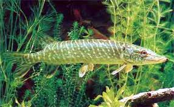

Haugi poiss
Haug ehk harilik haug ehk havi (Esox lucius) on hauglaste sugukonda haugi perekonda kuuluv röövkala. Haug elab Euraasia ja Põhja-Ameerika põhjaosa sisevetes. Ta on üks kõige laiemalt levinud mageveekala. Venemaal puudub ta vaid Amuuri jõgikonnas, kus elab amuuri haug. Ukrainas puudub haug ainult Krimmis.[1] Haugil on nooljas keha, mis on natuke külgedel lamenenud. Seljauim on keha tagaosas, suurendades saba tõukepinda. See võimaldab välkkiireid kohaltsööste saagi haaramiseks. Suhteliselt suurel peal on pardi nokka meenutav suu, millel on tahapoole kaldu olevad hambad. Haugi värvus sõltub keskkonnast, keha on selja pealt tavaliselt rohekas-sinakas, mis muutub allapoole minnes üha heledamaks, kõhualune on valge. Haugi hambad on suunatud sissepoole, et vältida saagi pagemist suust. Alalõua hambad on eri suurusega ja vahetuvad. Alalõua seesmine külg on kaetud pehme koega, mille all on asendushammaste kõverad read. Igal kihval on 2–4 asendushammast ja kui kihv välja langeb, siis tuleb tema asemele mõni asendushammas. Algul uus hammas logiseb, edaspidi aga kasvab tihedalt alalõua külge kinni. Hambad ei vahetu korraga, vaid kogu aasta vältel pidevalt on haugi suus nii noori kui vanu hambaid.[1] Haugi tavaline suurus on 50–100 cm, aga ta võib olla üle 150 cm pikk ja üle 35 kg raske. Vangistuses võib haug elada kuni 30 aasta vanuseks. Haug on suhteliselt paikne kala, kes eelistab aeglase vooluga jõgesid, järvi ja riimveelist rannikumerd, hoidudes enamasti kalda lähedale taimestikku või teistesse varju pakkuvatesse paikadesse. On ka hauge, kes elavad avavees ja jälitavad pisemaid parvekalu. Ta talub hästi happelist keskkonda ja võib elada veekogudes, mille pH on 4,75[1]. Haug on röövkala, kes toitub teistest kaladest, ka oma liigikaaslastest. Suured haugid võivad süüa konni, pardipoegi ja pisiimetajaid. Haugide hulgas on kannibalism väga levinud ja eksisteerib järvi, kus peale haugide teisi kalaliike üldse ei ela. Neis järvedes söövad pisikesed havid vesikirpe, vähikesi ja muud zooplanktonit, aga suuremad liigikaaslasi[1]. Eestis on haug tavaline ja teda püütakse ka töönduslikult. Ta esineb enamikus järvedes ja jõgedes, samuti rannikumeres. Harrastuspüügil kasutatakse enamasti spinningut ja elussöödaõnge, vähemal määral lendõnge ja põhjaõnge. Enamikus veekogudes on edukaim püügiviis elussöödaõng, mõnes spinning.